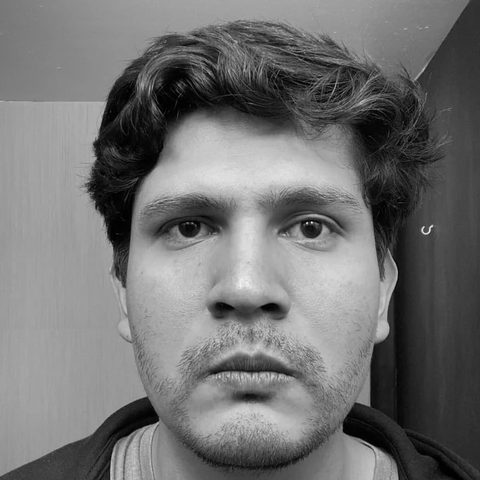

Calculadoras de ingeniería
Caudal en tuberías con unidades configurables, ecuación en LaTeX y gráfica interactiva con límites de velocidad.
#hidráulica #calculadora
Ingeniero civil y estudiante de Filosofía. Egresado de la Facultad de Ingeniería de la UNAM, con especialidad en hidráulica.
Trabajo de ingeniería, herramientas y, más adelante, notas de estudio.
Caudal en tuberías con unidades configurables, ecuación en LaTeX y gráfica interactiva con límites de velocidad.
#hidráulica #calculadora
Proveedores, productos y cotizaciones de piezas y servicios de agua potable. Requiere usuario y contraseña; los datos se publican cifrados.
#agua-potable #cotizaciones
Los 54 libros de los manuales técnicos de la Conagua para agua potable, alcantarillado y saneamiento, convertidos de PDF a HTML para leerlos y buscarlos en el navegador.
#agua-potable #normativa #biblioteca

Soy Wolfgang Antonio Reséndiz Martínez (también escrito Wolfgang Resendiz), ingeniero civil con especialidad en hidráulica, egresado de la Facultad de Ingeniería de la Universidad Nacional Autónoma de México (UNAM), y estudiante de Filosofía en la Facultad de Filosofía y Letras (FFyL) de la UNAM. Me interesan el agua potable, el aprovechamiento del agua de lluvia y las herramientas que hacen más sencillo el cálculo hidráulico.
Diseño y construcción de un dispositivo inteligente para la separación de primeras lluvias con fines de aprovechamiento en casa habitación (UNAM, 2019), asesorada por el M. I. Cristian Emmanuel González Reyes. El dispositivo, DISPLU, separa el agua de las primeras lluvias para almacenar agua limpia y obtuvo el primer lugar en licenciatura del Premio Rotoplas-FUNAM (2022).
Repositorio UNAM Ptolomeo (texto completo) Nota de la Facultad de Ingeniería